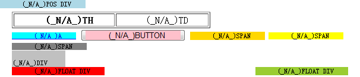

BT1025: IE 会忽略触发 hasLayout 的元素内尾部的全角空格
作者：陆远 孙东国
标准参考
无。
问题描述
对于全角空格，IE 中凡是会使该浏览器内 hasLayout 属性为 true 的元素内尾部的全角空格均会被忽略。
造成的影响
这个现象会使元素的宽度在 IE 中由于全角空格被忽略而显得比其他浏览器更小，从而造成布局上的差异。
受影响的浏览器
| IE6 IE7 IE8 |
|---|
问题分析
字符“ ”，即全角空格，其Unicode编号为“U+3000”。IE 对这个符号有着特殊的处理。
关于“空格”的更多信息，请参考 http://zh.wikipedia.org/zh-cn/空格。
IE 中凡是会使该浏览器内 hasLayout 属性为 true 的元素内尾部的全角空格均会被忽略。
分析以下代码：
<body style="font-size:12px; margin:20px;"> <table border='1'><tr><th class="t"> TH </th><td class="t"> TD </td></tr></table> <a href="#" style="background:cyan; zoom:1;" class="t"> A </a> <button class="t"><span style="background:pink;"> BUTTON </span></button> <span style="background:gold; display:inline-block;" class="t"> SPAN </span> <span style="background:yellow; overflow:hidden;" class="t"> SPAN </span> <span style="background:gray; width:50px; height:50px;" class="t"> SPAN </span> <div style="background:silver; width:90px;" class="t"> DIV </div> <div style="background:red; float:left;" class="t"> FLOAT DIV </div> <div style="background:yellowgreen; float:right;" class="t"> FLOAT DIV </div> <div style="background:lightblue; position:absolute; top:0; left:0;" class="t"> POS DIV </div> <script> var t = document.getElementsByTagName("*"); var w = []; var has = ""; var a = ""; for (var i = 0, j = t.length; i < j; i++) { if (t[i].className == "t") { w.push(t[i]); } } for (var i = 0, j = w.length; i < j; i++) { a = w[i].innerHTML; has = ((w[i].currentStyle == undefined) || (w[i].currentStyle.hasLayout == undefined)) ? "_N/A_" : ((w[i].currentStyle.hasLayout) ? "_yes_" : " _no__"); w[i].innerHTML = a.replace(/ /, " (" + has + ")"); } </script> </body>
以上代码分别测试了表格、块级元素、行内元素、浮动的元素、绝对定位的元素、按钮元素标签内包含全角空格的情况，标签内的文字均为“ [Some text] ”，即两个全角空格与一些字符及两个全角空格。
遍历了文档树内的所有元素，并筛选出 class 属性为“t”的元素，检测其是否是否含有 currentStyle 对象并且 currentStyle.hasLayout 是否为“真”，为真则显示“(true)”，为否则显示“(false)”，hasLayou 属性无效则显示“(N/A)”。
代码在各浏览器中效果如下：
| IE6(Q) IE7(Q) IE8(Q) |  |
|---|---|
| IE6(S) IE7(S) |  |
| IE8(S) |  |
| Firefox Chrome Safari Opera |  |
- 在 IE6(Q)、IE7(Q)、IE8(Q) 中，出现以下情况时，元素的内容文字尾部的所有全角空格都会被忽略：
1. 表格的单元格元素；
2. “zoom”的计算值不为 normal 的元素；
3. 设置了“display:inline-block”的元素；
4. 设置了宽度或高度的块级元素；
5. 设置了宽度或高度的行内元素；
6. 设置了浮动特性的元素；
7. 设置了绝对定位的元素；
8. 按钮元素；
9. 此外还有 'writing-mode' 特性为 'tb-rl'的元素。 - 在 IE6(S)、IE7(S) 中，当出现上面的情况 1、2、3、4、6、7、8 时，元素的内容文字尾部的所有全角空格被忽略；
- 在 IE8(S) 中，出现上面的情况 1、3、4、6、7、8 时，元素的内容文字尾部的所有全角空格被忽略；
- 在 其他非 IE 浏览器 中，全角空格按照普通的全角字符处理。
通过对元素 hasLayout 特性的判断不难发现，上述发生全角空格被忽略的元素都是在该浏览器中触发了 hasLayout 的元素。
即当元素触发当前的 IE 浏览器的 hasLayout 后，其内容文字尾部的所有全角空格被忽略。
解决方案
避免使用全角空格占位，使用“ ”代替全角空格。
参见
知识库
相关问题
测试环境
| 操作系统版本: | Windows 7 Ultimate build 7600 |
|---|---|
| 浏览器版本: | IE6 IE7 IE8 Firefox 3.6.2 Chrome 5.0.356.2 dev Safari 4.0.5 Opera 10.51 |
| 测试页面: | fullwidth_space.html |
| 本文更新时间: | 2010-07-15 |
关键字
space full-width 全角 字符 hasLayout